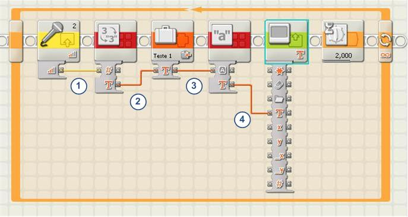

Software porting is the process of adapting a program to be able to execute in another computing environment that differs from the originally intended computing environment.
Software ports are commonly known to consumers as the Supported Operating Systems, Software Compatibility or Supported Platforms label commonly seen under requirements when downloading or purchasing videogames, electronics. As a longtime Window user (till 2016), I never encountered any issues with software capability issues before. I think the only time I encountered such an issue was when my brother and I were trying to program an 8527 Lego MindStorms NXT using the NXT-G software that came with it. NXT-G was a graphical programming environment that was bundled with the NXT and was quite simple for kids to program the robot.

Unfortunately for me, I learned on that day that you could not simply use a program that is not supported by the vendor. The NXT-G supported only Windows XP SP 2 or Windows Vista which I did not have at the time. As a young teen, I never knew that software built for Windows XP and Vista could not run on Windows 7 even though they are from the same family. Therefore, I had to lunge out an old Compaq laptop to install the program.
Such issues are not uncommon for consumers. Anyone with a phone will know that there are differences between how an iphone and an Android phone works and the apps that can be installed on them. Apps from big corporations typically support both ios and Android but there’s plenty of apps that are platform exclusive. Gamers are also frequent victims to this where some titles would be exclusive to Nintendo, PS5, or on the Xbox causing gamers to miss out on some major titles.
Why Is Software Portability Issue a Thing?
The reason why software cannot be executed in another computing environment right off the box is due to differences in both software and hardware architecture.
Just as there are many languages around the world, communicating with each other can be very difficult. The same applies to computers. Computers may communicate with each other in binary (0 or 1 / off or on), but they need to be structured in a certain sequence to be understandable. For instance, French and Italian seem to share the same set of symbols but they are not the same language. English has a lot of similarities with the romance languages as well where all 26 letters of the English alphabet appear in French. They are based on the Latin alphabet. Despite the similarities, I cannot converse in French nor Italian.
CPU (commonly known as the brain of the computer) has a set of instructions that it can understand. You can think of this as the language of the computer. There are a few instruction set architectures (ISA) that exist. Commonly used ISA you may use is x86 seen typically in Intel and AMD chips, ARM on your mobile phones and in your handheld devices such as the Nintendo Switch.
A program is just a series of instructions so if two computing devices share the same instruction set, then should they not be able to understand how to execute the program? CPUs implemented with the same ISA can indeed execute the program but whether it’ll behave the way you want to is a different story.
There is more to software portability than just being able to understand the instruction. When programming, especially at a very low-level, the instruction needs to reflect the hardware capability of the computing environment as well. For instance, perhaps the program wants to interface with the screen or the memory. The instructions must address the correct address (i.e. location) and ensure it communicates with other peripherals correctly.
On the topic of ISA, before higher-level language programming such as C or Java was a thing or at least commonly used, a lot of programs and games were written in Assembly, a very low-level language that is extremely similar to the architecture’s machine code. The issue with this was that every ISA and version of the architecture itself required programmers to learn different versions of assembly. Assembly heavily reflects the CPU’s architecture and therefore, it is probable (I’m not an assembly programmer so I could be wrong) that a program written in one version of assembly wouldn’t run on another ISA or version of the same ISA.
As I stated earlier, when working with low-level languages, the instruction set must consider the hardware capability of the computer and architecture. The memory layout of a Gameboy color for instance is drastically different from the Sega Genesis. The hardware, memory layout and architecture are so different that programmers must consider the differences when porting their games. It’s not simple as just translating their code to reflect the memory and CPU architecture. The differences in computing power also require developers to be smart on how they port the game. Perhaps they need to take advantage of a compression algorithm or hardware to fit their game into the new port, lower the resolution, simplify the game functionalities when porting to more limited hardware.
Emulation is one of the greatest pieces of software that exists. Emulation allows one to mimic another computing device. The advantage of emulation is that games do not have to be rewritten to reflect the new host’s hardware and software capabilities. Once the emulator is written for a particular platform, any programs written for the emulated hardware should be able to run in theory. Videogame emulation is often frowned upon by companies because it allows players to create mods, run cheat codes, and pirate games. However, emulation can be seen in videogame consoles as well. For instance, Nintendo’s Virtual Console is an emulation on the Wii, WiiU, and 3DS that allows gamers to buy and play retro games on their consoles such as Pokemon Yellow on the 3DS. They are able to release a lot of retro games because of the power of emulation. With minimal changes and enhancements, they can quickly release games on newer consoles. When Super Mario 3D All-Stars was released, there were lots of reactions when gamers found out the game used emulation. According to someone on Twitter (quote taken from eurogamer),
Super Mario Galaxy was recompiled to run natively on the Switch’s ARM processor but most other tasks, such as graphics rendering, are handled via emulation - a hybrid approach”
Software Platforms
Aside from differences in ISA, there are many reasons why software cannot be executed on any computing device. There’s also a software layer as I mentioned earlier. For instance, a lot of games cannot not be run on Linux so Wine was often used to run Windows applications on Unix-like systems. The reason why Wine’s recursive backronym is Wine Is Not an Emulator is because it does not try to emulate x86 instructions nor does it try to mimic the Windows OS. Linux can be run on a lot of different sets and versions of CPUs from various ISA. Windows programs cannot run on Linux mainly due to differences in the system call. A system calls are a set of functions that are used to communicate with the Kernel (the software responsible to communicate with your computer’s hardware, memory management, job scheduling and more). Wine translates Windows System calls to POSIX system calls (a standard for OS Portability), recreating Windows file structure, and implements Windows system libraries. A lot of videogames take advantage of Direct X libraries created by Microsoft which is a collection of APIs responsible for multimedia tasks such as video and sound. There’s no Linux implementation of Direct X, hence why a lot of programmers would be reluctant to support Linux.
The same reason can be applied to Android apps. Android OS uses the Linux kernel but includes a lot of software layers on top of the kernel that makes it not possible to execute Linux programs on Android apps and vice versa.

From the image above, you can see there’s a lot of software layers on top of the Linux kernel. The kernel is responsible for a lot of the low-level services such as interacting with the hardware and memory management. Not only is your Linux desktop missing a lot of these software layers that the app runs on top of, but it’s also missing a lot of core libraries that are used by many Android apps (similarly to the issue of DirectX not existing on Linux). Having an Android app on your Linux machine can be done by either emulating an Android device or making your Linux machine an Android device.
Higher-level languages allow programs to be very portable. One of the reasons why C was a success was its portability. Once a compiler has been written for the specific CPU, you can essentially execute most programs written in C. Programmers no longer need to learn the assembly code for their specific targeted CPU. Higher-level languages allow you to abstract the hardware making life much easier. C is often considered a low-level language because of its ability to access memory and perform low-level actions. But you could simply create programs without much knowledge of the hardware (you just need to understand how the memory stack works). A very popular language that got famous for its portability is Java. Java is a language that runs the Java Virtual Machine, which allows programmers to write programs once and run on any machine. This ability made Java explode in popularity because this meant that programmers can write programs that are platform-independent. If you are interested in JVM, you should take a look at Nand2Tetris Part II on Coursera which goes through creating a high-level language that gets translated to VM instructions which are then translated to assembly code.
The web has become a popular place to write programs because of the ability to create programs regardless of the platform. Of course, there are differences in performance and compatibility between browsers. Most websites should run fine on different web browsers (especially since a lot of browsers are now running on top of the Chromium engine which Google Chrome also shares a lot of code with - Chromium is Google’s open-source project so it makes sense that Chrome shares a lot of the same code). Browsers that run on Chromium include Brave and Microsoft Edge which could explain why Linux has a MS Edge preview.
Using Javascript, a web-based language, for creating apps has been growing in numbers. You can now create mobile apps using React Native, a JS framework. You can also create desktop apps using Electron which utilizes Chromium & Node.js, a JS framework. Web-based apps are encroaching software development. It’s amazing and also scary to see how far and wide JS is being used to replace other technologies and languages. Creating desktop apps through Electron has allowed companies to write desktop apps that can run on all 3 major OS: Windows, macOS, and Linux.
Original Image Links:
- https://www.generationrobots.com/en/content/61-nxt-g-programmation-lego-mindstorms-nxt?code_lg=lg_fr
- http://www.robotsandcomputers.com/robots/mindstorms.htm
- https://developer.android.com/guide/platform